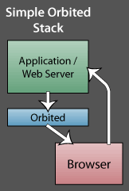
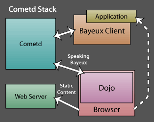
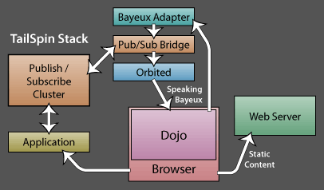

Orbited: Comparison of Comet Stacks
Table of contents
Introduction
There are an increasing number of Comet platforms out there, and we want to give you an idea of how they relate to Orbited. This page will be updated with diagrams comparing other frameworks to our own.
Simple Orbited Stack
Orbited runs beside your Web application. The browser maintains a permanent connection to Orbited. As the user interacts with the browser, requests are made to the app in the traditional style of AJAX or standard HTTP communication. If the user triggers an event that should be dispatched to other users, it sends the event to the application, not Orbited. When the application has an event to dispatch to the user, such as an instant message, the application sends it to Orbited which forwards it to the browser.
Pros
- Very Fast
- Very Simple
- Easy to setup
- Scalable
- Many Tutorials
- Rudimentary Documentation
Cons
- No Publish/Subscribe Mechanism
Cometd Stack
Cometd also runs beside your web application. The browser maintains a permanent connection to Orbited. As the user interacts with the website, they may trigger an event that must be dispatched to another user or group of users. This event is delivered directly to Cometd. If the webserver needs notification of that event as well, it must either act as a Bayeux enabled browser and subscribe to the event via Cometd, or the browser needs to also send the event to the web application. Communication to Cometd is generally in the form of a subscribe or unsubscribe request, or in the form of a publish event. Communication from Cometd is generally to publish an event to the browser.
Pros
- Reasonably Fast (Implementation Specific)
- Easy to Setup
- Publish Subscribe Mechanism
Cons
- Locked into Dojo toolkit
- Difficult to implement Bayeux Client for the Web app
- Serious Scalability issues
- No Documentation
- Moving Target (API and Bayeux protocol change often)
TailSpin
Tailspin does not currently exist as a stack. It was proposed by Michael Carter as a solution to scaling a Cometd/Bayeux server by combining the Orbited stack with a PubSub layer and a Bayeux Adapter.
Pros
- Fast
- Publish Subscribe Mechanism
- App directly accesses Pub-Sub server (i.e: Web app is a jabber client)
- Scalable
Cons
- Still Locked into Dojo toolkit
- Doesn't exist Yet